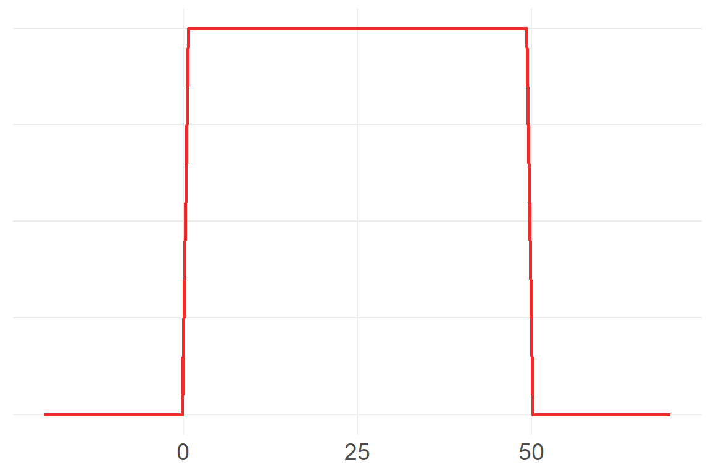

set.seed(5423)
a <- sample(c(-1,1), size=16, replace=T)
a [1] -1 -1 -1 -1 -1 1 -1 1 1 -1 -1 -1 -1 1 -1 -1Chapter 4 - Geocentric Models
Ptolemy used epicycles to construct a model of the motion of planets in our solar system in which the planets and sun revolved around the Earth - a geocentric model. It was very accurate and produced good predictions, though we know now that the underlying causal model is wrong.
Linear regression is the geocentric model of applied statistics. Regardless of the underlying data generating process, it assumes that the outcome of interest can be modeled as the additive combination of other measurements. Linear regression is a descriptive model of the world that works in a lot of cases, because the normal distribution is the additive combination of other measurements, and the normal distribution can be found quite often in the physical world.
This chapter introduces linear regression as a Bayesian procedure. Since Bayesian analysis requires a probability model, we use a normal distribution to benchmark our uncertainty about some outcome of interest. Once we learn linear regression and how it is expressed as a Bayesian procedure, we can move on to other forms of regression which are not so normal.
There are many ways to generate a normal distribution as a description of a real-world physical process. Let’s start with a sequence of steps. The steps are randomly generated, and can go either left (-1) or right (1). Let’s look at a sequence of 16 steps.
set.seed(5423)
a <- sample(c(-1,1), size=16, replace=T)
a [1] -1 -1 -1 -1 -1 1 -1 1 1 -1 -1 -1 -1 1 -1 -1Where does this path take us?
sum(a)[1] -8So we got 12 steps of -1 and 8 steps of 1, resulting in a position of -8 after 16 steps. Let’s see this.
p1 <- data.frame(Step=0:16,
path=1,
out=c(0,a)) %>%
mutate(Outcome=cumsum(out))
p1_gg <- ggplot(p1, aes(Step, Outcome)) +
# geom_segment(aes(y=0, yend=0, x=0, xend=16)) +
geom_hline(yintercept=0, size=1.4, color="grey60", alpha=.4) +
geom_point(color="dodgerblue2", size=1) +
geom_line(color="dodgerblue2", size=.75) +
scale_x_continuous(breaks=0:16) +
scale_y_continuous(limits=c(-8,8),
breaks=-8:8) +
# labs(y="Outcome",
# x="Step") +
theme(axis.title.y=element_text(angle=0, vjust=.5))
p1_gg
Let’s add another path.
d <- p1 %>%
bind_rows(p2)
str(d)'data.frame': 34 obs. of 4 variables:
$ Step : int 0 1 2 3 4 5 6 7 8 9 ...
$ path : num 1 1 1 1 1 1 1 1 1 1 ...
$ out : num 0 -1 -1 -1 -1 -1 1 -1 1 1 ...
$ Outcome: num 0 -1 -2 -3 -4 -5 -4 -5 -4 -3 ...ggplot(d, aes(Step, Outcome, color=as.factor(path))) +
geom_hline(yintercept=0, size=1.4, color="grey60", alpha=.4) +
# geom_point(size=3) +
geom_line(size=.75) +
scale_color_viridis_d(alpha=.6) +
scale_x_continuous(breaks=0:16) +
scale_y_continuous(limits=c(-8,8),
breaks=-8:8) +
theme(axis.title.y=element_text(angle=0, vjust=.5),
legend.position="none")
Let’s add a third.
p3 <- data.frame(Step=0:16,
path=3,
out=c(0,sample(c(-1,1), size=16, replace=T))) %>%
mutate(Outcome=cumsum(out))
d <- d %>%
bind_rows(p3)
str(d)'data.frame': 51 obs. of 4 variables:
$ Step : int 0 1 2 3 4 5 6 7 8 9 ...
$ path : num 1 1 1 1 1 1 1 1 1 1 ...
$ out : num 0 -1 -1 -1 -1 -1 1 -1 1 1 ...
$ Outcome: num 0 -1 -2 -3 -4 -5 -4 -5 -4 -3 ...ggplot(d, aes(Step, Outcome, color=as.factor(path))) +
geom_hline(yintercept=0, size=1.4, color="grey60", alpha=.4) +
# geom_point(size=3) +
geom_line(size=.75) +
scale_color_viridis_d(alpha=.6) +
scale_x_continuous(breaks=0:16) +
scale_y_continuous(limits=c(-8,8),
breaks=-8:8) +
theme(axis.title.y=element_text(angle=0, vjust=.5),
legend.position="none")Now let’s simulate this process a thousand times, though we’ll graph a random selection of 100 of those.
set.seed(432)
ot <- data.frame(replicate(1e3,
sample(c(-1,1), size=16, replace=T)))
#str(ot)
#head(ot)
#otL <- ot %>%
# pivot_longer(names_to="path",
# values_to="out")
otL <- ot %>%
t() %>%
as.data.frame()
ot2 <- otL %>%
pivot_longer(cols=1:16,
names_to="Step",
values_to="out") %>%
mutate(Step=as.numeric(str_sub(Step, 2, nchar(Step))),
path=rep(1:1000, each=16)) %>%
group_by(path) %>%
mutate(Outcome=cumsum(out)) %>%
ungroup()
tes <- data.frame(Step=rep(0,1000),
out=0,
path=1:1000,
Outcome=0)
#tes
d <- ot2 %>%
bind_rows(tes) %>%
arrange(path, Step) %>%
as.data.frame()
#str(d)
#str(ot2)path_samp <- sample(1:1000, size=100)
d_samp <- d %>%
filter(path %in% path_samp)
ggplot(d_samp, aes(Step, Outcome, color=as.factor(path))) +
geom_hline(yintercept=0, size=1.4, color="grey60", alpha=.4) +
# geom_point(size=3) +
geom_line(size=.25, position=position_jitter(width=.3, height=.3)) +
scale_color_viridis_d(alpha=.6) +
scale_x_continuous(limits=c(0,16),
breaks=0:16) +
scale_y_continuous(limits=c(-8,10),
breaks=-8:10) +
labs(caption="Lines jittered to\nmitigate overplotting",
title="100 paths of 16 random steps") +
theme(axis.title.y=element_text(angle=0, vjust=.5),
legend.position="none")
Let’s look at the distribution of final scores.
fin <- d %>%
filter(Step==16)
#frq(fin$Outcome)
ggplot(fin, aes(Outcome)) +
geom_bar(width=.5,
color="blue",
fill="dodgerblue2") +
theme(axis.text.y=element_blank()) +
labs(x="",
y="",
title="Distribution of final outcomes of 16 random steps") +
scale_x_continuous(limits=c(-12,12),
breaks=seq(-12,12, 2))# ggsave(here("viz/Chapter 4/distribution of end points.png"),
# device="png",
# type="cairo",
# height=4,
# width=7)That looks a lot like a normal distribution with mean zero. McElreath explains how this could be so:
Whatever the average value of the source distribution, each sample from it can be thought of as a fluctuation from that average value. When we begin to add these fluctuations together, they also begin to cancel one another out. A large positive fluctuation will cancel a large negative one. The more terms in the sum, the more chances for each fluctuation to be canceled by another, or by a series of smaller ones in the opposite direction. So eventually the most likely sum, in the sense that there are the most ways to realize it, will be a sum in which every fluctuation is canceled by another, a sum of zero (relative to the mean).
We can also get a normal distribution through multiplication. Suppose that there are several growth factors that interact with one another to produce a percentage increase in growth, rather than a sum. Each growth factor interacts with another factor multiplicatively.
a <- round(1 + runif(12, 0, .1),2)
a [1] 1.07 1.09 1.03 1.06 1.09 1.01 1.05 1.03 1.05 1.08 1.08 1.06prod(a)[1] 1.97a_rep <- data.frame(x=replicate(1000, prod(1+runif(12, 0,.1))))
ggplot(a_rep, aes(x)) +
geom_density(color="dodgerblue2", size=1)Small effects that multiply together are additive, but note that this is not true for large multiplicative effects.
a_rep2 <- data.frame(x=replicate(1000, prod(1+runif(12, 0,.6))))
ggplot(a_rep2, aes(x)) +
geom_density(color="dodgerblue2", size=1)However, we can get back to a normal distribution by taking the log of these large multiplicative effects.
a_rep3 <- data.frame(x=replicate(1000, log(prod(1+runif(12, 0,.1)))))
ggplot(a_rep3, aes(x)) +
geom_density(color="dodgerblue2", size=1)Recall that summing logs is the same as multiplying the original numbers, so we get back the normal distribution. This is of course the motivation for taking the log of a variable with high skew, in order to recover a normal distribution.1
There are additional reasons to model your data using a Gaussian distribution as your reference point. As McElreath explains:
When all we know or are willing to say about a distribution of measures (continuous values along the real number line) is their mean and variance, then the Gaussian distribution arises as the most consistent with our assumptions.
That is to say that the Gaussian distribution is the most natural expression of our state of ignorance, because if all we are willing to assume is that a measure has finite variance, the Gaussian distribution is the shape that can be realized in the largest number of ways and does not introduce any new assumptions… This epistemological justification is premised on information theory [Chapter 7] and maximum entropy [Chapter 10].
So we proceed with using normal distributions as a reference point for inference / analysis.
We will now look at data of human heights and model it according to a Gaussian distribution.
data(Howell1)
d <- Howell1
rm(Howell1)
str(d)'data.frame': 544 obs. of 4 variables:
$ height: num 152 140 137 157 145 ...
$ weight: num 47.8 36.5 31.9 53 41.3 ...
$ age : num 63 63 65 41 51 35 32 27 19 54 ...
$ male : int 1 0 0 1 0 1 0 1 0 1 ...precis(d) mean sd 5.5% 94.5%
height 138.264 27.6 81.11 165.7
weight 35.611 14.7 9.36 54.5
age 29.344 20.7 1.00 66.1
male 0.472 0.5 0.00 1.0
histogram
height <U+2581><U+2581><U+2581><U+2581><U+2581><U+2581><U+2581><U+2582><U+2581><U+2587><U+2587><U+2585><U+2581>
weight <U+2581><U+2582><U+2583><U+2582><U+2582><U+2582><U+2582><U+2585><U+2587><U+2587><U+2583><U+2582><U+2581>
age <U+2587><U+2585><U+2585><U+2583><U+2585><U+2582><U+2582><U+2581><U+2581>
male <U+2587><U+2581><U+2581><U+2581><U+2581><U+2581><U+2581><U+2581><U+2581><U+2587>Let’s deal only with adults, in order to avoid any complicating relationships associated with maturation and height.
d2 <- d %>%
filter(age>=18)
ggplot(d2, aes(height)) +
geom_density(color="dodgerblue2", size=1)It looks rather normally distributed, but it also looks uniform at modal values of 150-160.
If we’re going to use the Gaussian distribution to model this data, than we need to estimate the two parameters mean \(\mu\) and standard deviation \(\sigma\). To define the heights as normally distributed with a mean \(\mu\) and standard deviation \(\sigma\), we write:
\[h_i\sim Normal(\mu, \sigma)\]
The height of each individual element in the data is governed by a common parameter of \(\mu\) and \(\sigma\). We don’t know the values of these parameters so we cycle through the range of candidate values and assess the likelihood that each combination of \(\mu\) and \(\sigma\) could explain the data. Thus, the model line above is referred to as the likelihood function of the model.
We also need to describe, or set, our prior information about the parameters:
\[\mu \sim Normal(178,20)\] $$
Uniform(0,50)
$$
178 centimeters is just McElreath’s own height, in order to set the prior value as though McElreath knew only his own height, or took his own height as a reasonable draw from the population of human heights. The standard deviation of \(\mu\) is large, ensuring that this initial estimate of the mean of the population of adult human heights could be anything 40 centimeters taller or shorter. We also have an initial estimate of the standard deviation of human heights, where 95% of the data could range 100 centimeters above or below the mean.
It’s always a good idea to have a good sense of what prior information you are programming into your model. This modeling is referred to as the prior predictive distribution.
ggplot() +
geom_density(data=d2, aes(x=height), color="dodgerblue2", size=1) +
xlim(120, 236) +
geom_function(fun=dnorm,
args=list(mean=178, sd=20),
color="firebrick2",
size=1) +
scale_x_continuous(limits=c(120, 240),
breaks=seq(120,240,10)) +
theme(axis.ticks.y=element_blank(),
axis.text.y=element_blank(),
axis.title.y=element_blank())ggplot() +
xlim(-20, 70) +
geom_function(fun=dunif,
args=list(min=0, max=50),
color="firebrick2",
size=1) +
theme(axis.ticks.y=element_blank(),
axis.text.y=element_blank(),
axis.title.y=element_blank())
Ok, let’s model!
McElreath now tries to show us the computation in a way that we can sort of follow from the ideas of Bayes Theorem.
describe(d2$height) vars n mean sd median trimmed mad min max range skew kurtosis se
X1 1 352 155 7.74 154 154 8.47 137 179 42.5 0.15 -0.51 0.41mu.list <- round(seq( from=137, to=179 , length.out=1000 ),2)
#mu.list
sigma.list <- round(seq( from=6 , to=10 , length.out=1000 ), 4)
post <- expand.grid( mu=mu.list , sigma=sigma.list )
head(post) mu sigma
1 137 6
2 137 6
3 137 6
4 137 6
5 137 6
6 137 6post$LL <- sapply( 1:nrow(post) , function(i) sum(
dnorm( d2$height , post$mu[i] , post$sigma[i] , log=TRUE ) ) )
ggplot(post, aes(mu, LL)) +
geom_vline(xintercept=155, color="darkgoldenrod2", alpha=.5, size=1.5) +
geom_line(color="dodgerblue2", alpha=.2)post$prod <- post$LL + dnorm( post$mu , 178 , 20 , TRUE ) +
dunif( post$sigma , 0 , 50 , TRUE )
post$prob <- exp( post$prod - max(post$prod) )The normal (Gaussian] distribution is a member of a family of fundamental natural distributions known as the exponential family.↩︎